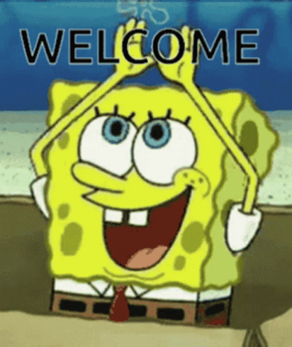
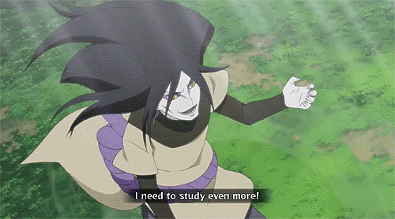
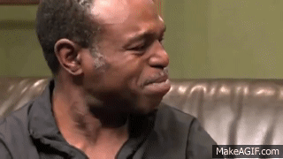

Hi! I am Hoang. Welcome to my world! 
My name is Hoang Dang. I am currently in my second year of the Bachelor of Software Engineering at UNSW. The below is some other key facts about me: - Age: 20 - Status: International - Home country: Vietnam - COMP courses taken: Comp1511, Comp1521, Comp1531
I am definitely an introverted person (I process a lot of monologue while talking). I am usually quiet and preserved in front of the crowds or strangers but very energetic and active at home especially during night time (nocturnal :D). I love studying and am always willing to learn more and more. So my world is usually around with learning and reading.

My hobbies include playing chess, reading fictions, and solving challenging mathematical problems (I am
slightly masochistic, as the dissected face suggest LOL). I also enjoy cooking
and playing the piano (not so when I was a kid).
In mathematics, I am most interested in geometry and how to apply different techniques to solve geometric problems. In computer science, I am most curious about operating system.
How many personal projects in computers science I have done before? It is the value of the following expression:
0. I have done some personal projects in high school or some uni assignments as projects but no formal personal one before. So this personal profile is the first one. 